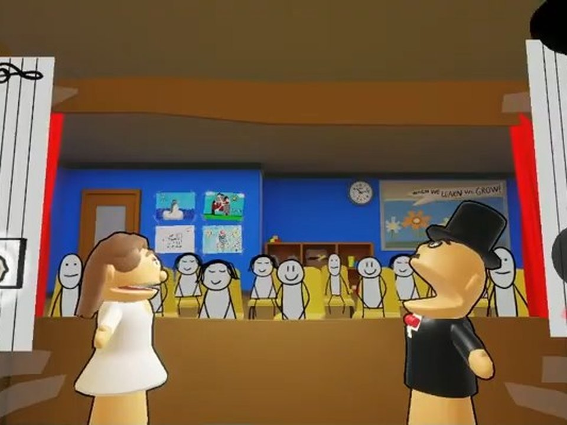
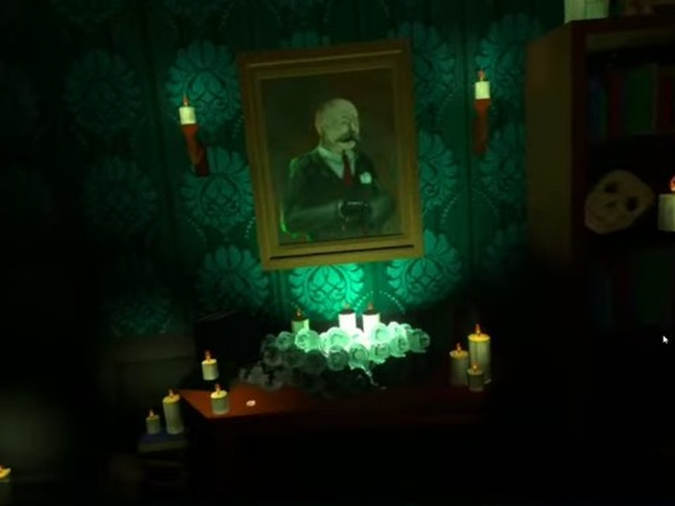
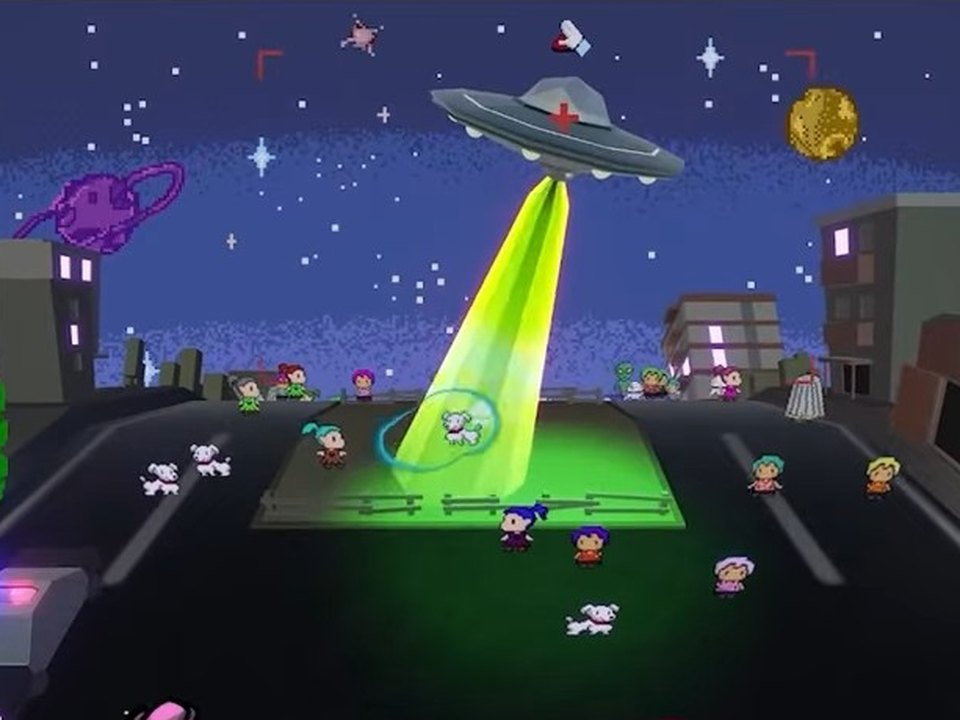
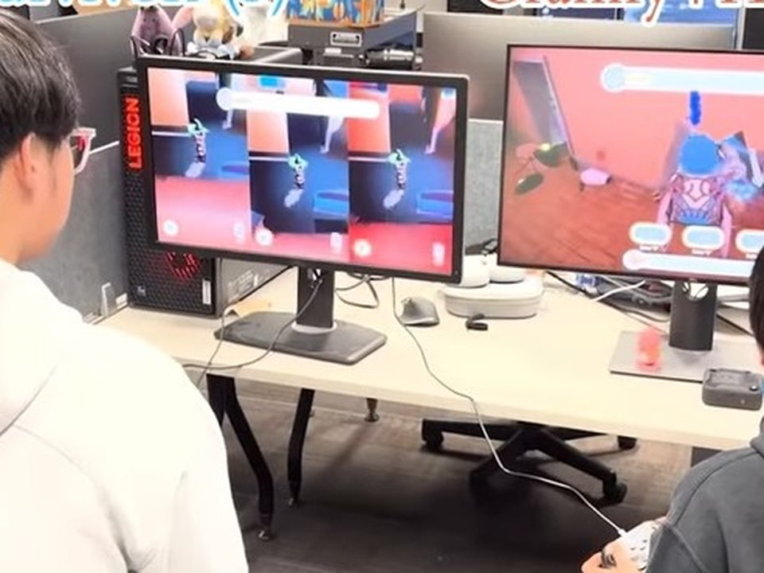

I had fun
Four games in fourteen weeks, made in Building Virtual Worlds, my first semester at Carnegie Mellon’s Entertainment Technology Center (Fall 2025). A new team, a new prompt and a new platform every round. Two made it to the BVW Festival.

Music Puppet Show
Producer · UI/UX · Sound
Prompt: buttons that don’t feel like buttons
Each button became a way to move a puppet. Follow the music and two puppets put on a school show.
Watch ↗

Boo Buddy Blitz
Producer · 3D Art
Prompt: indirect control, no instructions
No tutorial, no arrows. Players wander a cozy house in VR and find a shy little ghost on their own.
Watch ↗

This Planet Sucks
UI/UX · Sound
Prompt: weird inputs, eye tracking + joystick
A two-player co-op: one player aims the UFO’s beam just by looking, the other steers with a joystick. Together they beam up everyone on the wanted list.
Watch ↗

Capybara vs Granny
Producer · UI/UX · Sound
Prompt: open brief, anything goes
We picked a 3 vs 1 chase. Three capybaras use their powers to survive while one granny hunts them down.
Watch ↗